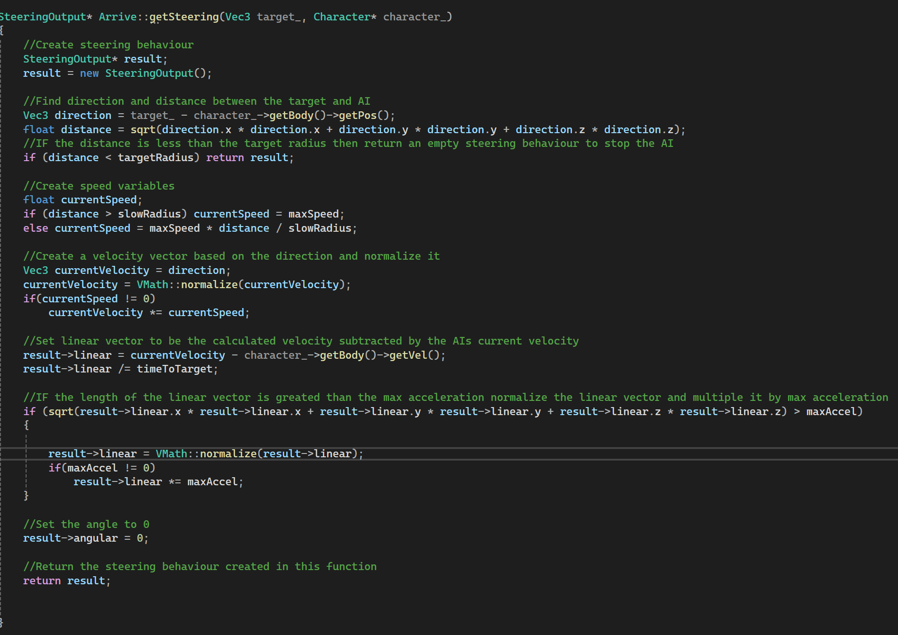
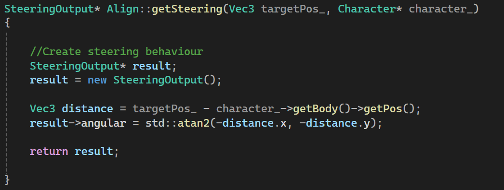
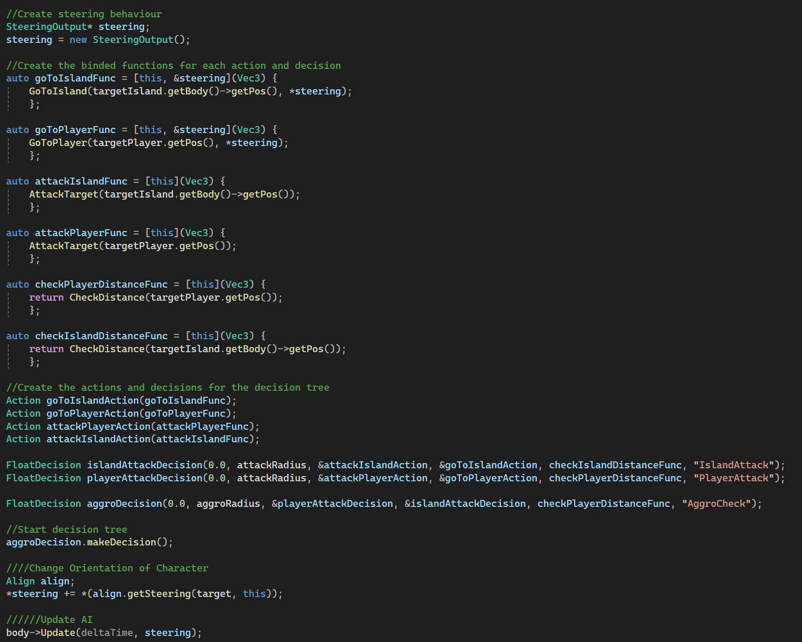
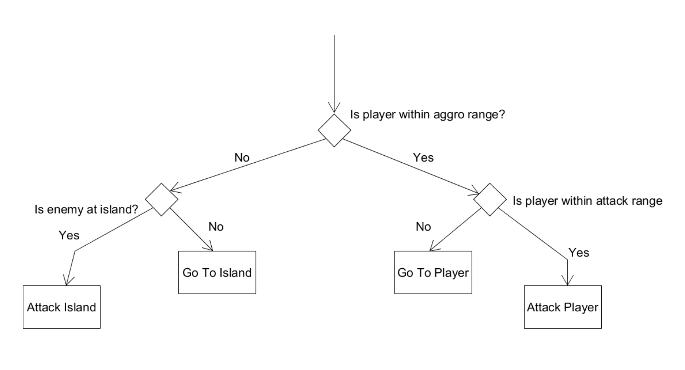

Game Developer | Programmer | Designer
I worked on this project alongisde two others for an AI course in Humber's Game Programming Program. The goal of this project was to learn and correctly implement steering, pathfinding, and decision making AI. I worked on the steering and decision making AI behaviours.
The steering behaviours I chose to use for this project were Arrive and Align. The Arrive behaviour calculates the direction and distance between the AI and it's target and then calculates the velocity based on that information. The AI then moves towards the target and once it gets near the target radius, it will begin to slow down. The Align behaviour uses the position of the target to calculate a new rotation and then applies that rotation to the AI's current rotation so that the AI rotates towards the target.
 The decision making behaviour I chose to implement in this project was a decision tree. The decision tree has actions and decisions. Decisions are made when the AI needs to check for a condition. Actions are executed based on the decision that the AI made. In this project the decision tree has simple logic. When the AI spawns it makes a decision based on if the player is within aggro range of the AI. If so it then makes another decision based on if the player is within attack range. If yes then the decision tree executes an action of attacking the player and if not then the decision tree executes an action of moving towards the player using both the Align and Arrive steering behaviours. If the player is not within aggro range of the AI when the AI spawns then the decision tree makes another decision based on if the AI is at an island. If yes then the decision tree executes an action of attacking the island and if not then the decision tree executes an action of moving towards the island.
 I feel that I learned a lot of different techniques and practices on AI behaviour that I did not know before such as a decision tree.